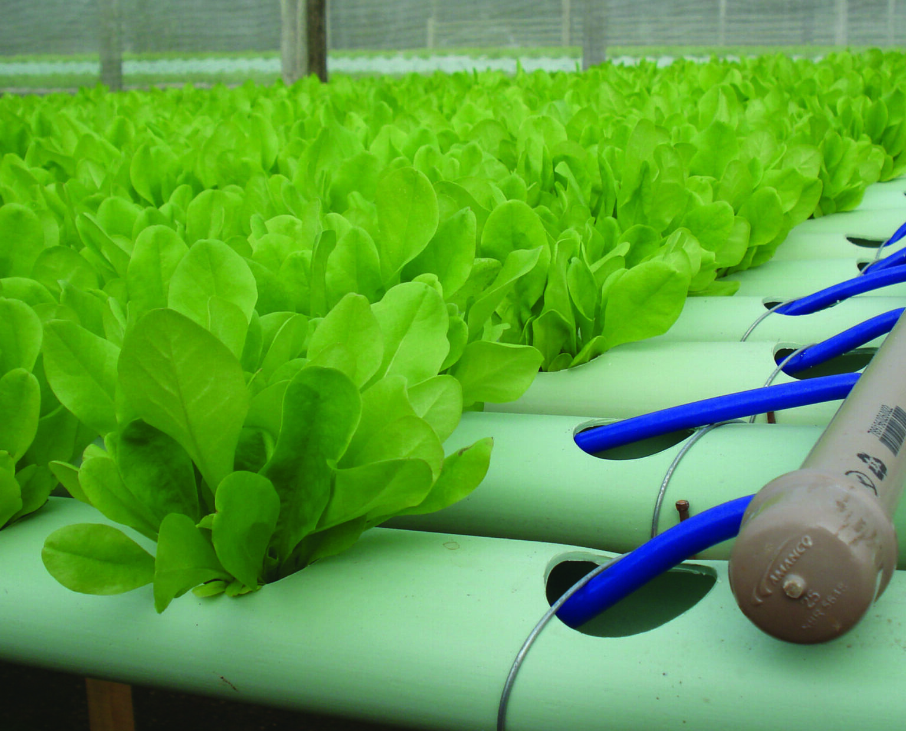

O que é Hidroponia?
Hidroponia é uma técnica de cultivo de plantas sem solo, utilizando soluções nutritivas em água. É uma alternativa sustentável e eficiente para a agricultura tradicional, com diversas vantagens.
Vantagens da Hidroponia:
- Produção mais rápida e eficiente;
- Menor uso de água e recursos;
- Cultivo em qualquer lugar, mesmo em espaços pequenos;
- Controle total sobre os nutrientes e o ambiente;
- Menor risco de pragas e doenças;
- Cultivo livre de pesticidas;
Tipos de Sistemas Hidropônicos:
O sistema NFT utiliza uma fina camada de solução nutritiva que flui continuamente pelas raízes das plantas.
O sistema DWC utiliza um tanque com solução nutritiva onde as raízes das plantas ficam submersas.
No sistema aeropônico, as raízes ficam suspensas no ar e são borrifadas com solução nutritiva.
